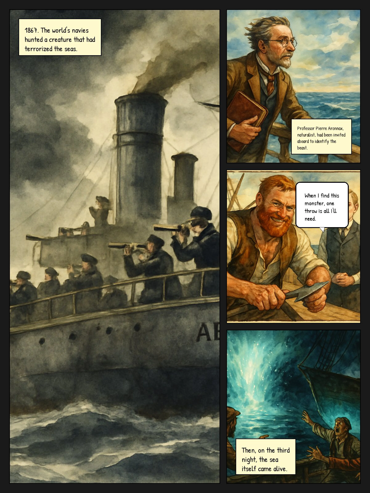
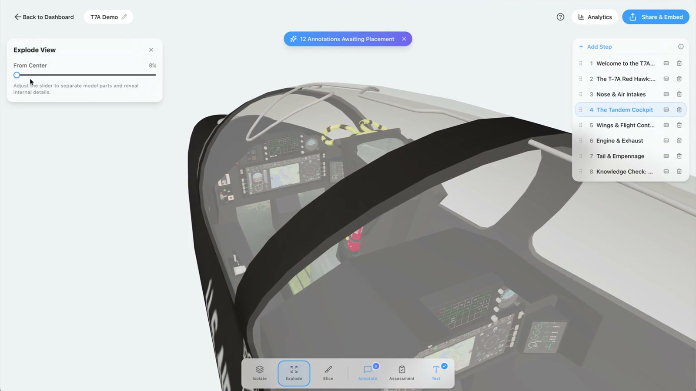

“What did
you cut?”
A skill that turns a design career ladder into a conversation about judgment, craft, and the work.
Adapted from the public 37signals design ladder.
View on GitHub ↗I’m Arvin. I design, build, and follow my curiosity a little further than strictly necessary.
Let’s have a look ↓


THE PERSON ATTACHED TO ALL THIS
I like the moment a complicated thing becomes a simple one.
I take cues from rooms, buildings, and the shape of letters. I ask a lot of questions. Sometimes the answer turns into an app.
I’ve been making things with software since the Dreamweaver and AOL days. I still get the same kick out of making something work.
More open tabs, on GitHub ↗A skill that turns a design career ladder into a conversation about judgment, craft, and the work.
Adapted from the public 37signals design ladder.
View on GitHub ↗Startup lessons, turned into focused workflows for founders. A way to put useful ideas to work.
An independent adaptation of Troy Henikoff’s public lessons.
Explore the stack ↗See the public guide